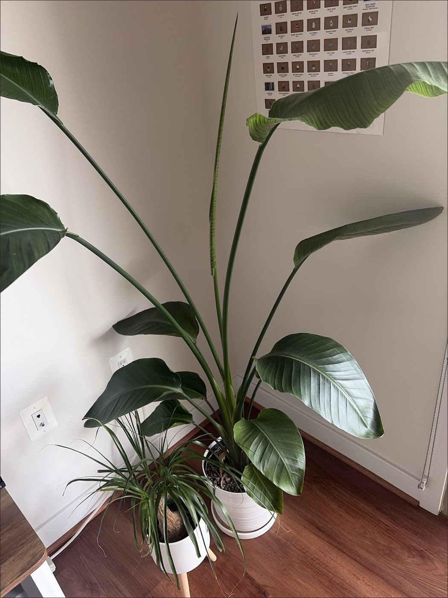
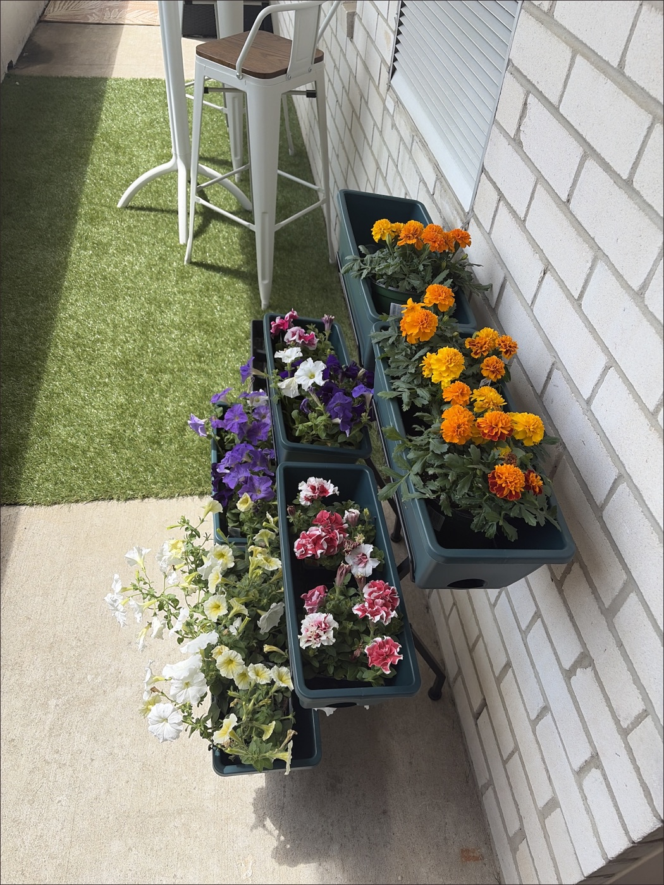
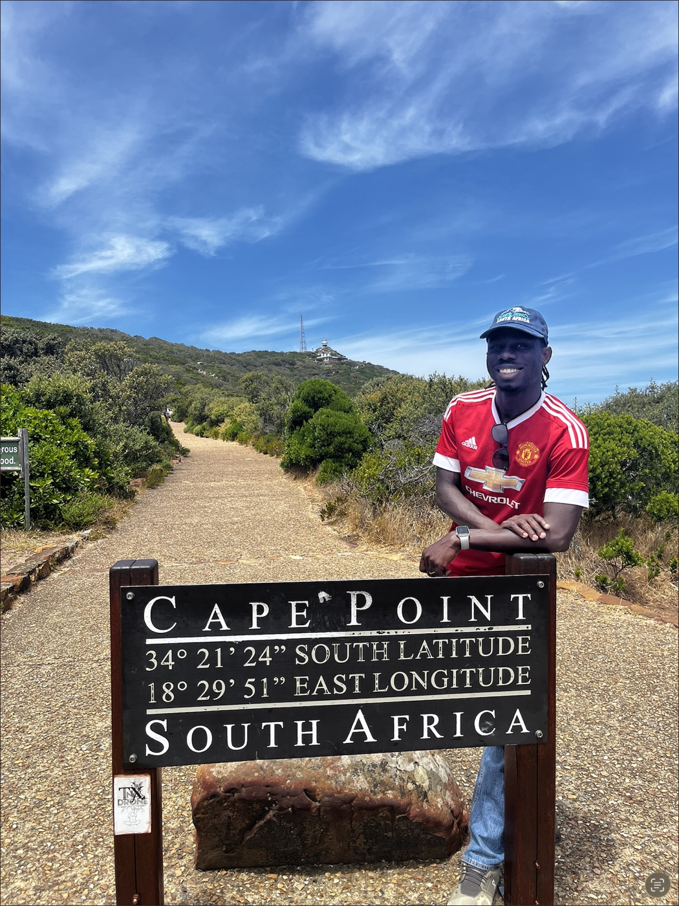

John Sena Akoto
I engineer the infrastructure the AI frontier runs on.
From modeling the earth's subsurface to building the infrastructure behind AI. I engineer systems for domains no one's fully mapped yet. At Oracle, that's cloud and AI infra. At Krom Analytics, it's Ghana's informal markets — bringing the same rigor to economies the data has never reached.
- Now
- Software Engineer, Oracle
- Focus
- AI infrastructure · GPU compute
- Also
- Krom Analytics · travel · soccer · gardening
01 · About
Infrastructure, resilience, observability at scale.
I like work where the details matter: scheduling, reliability, performance, data quality, and the messy last mile between an idea and a system people can actually use.
02 · Work
What I build
My current center of gravity is AI infrastructure: compute environments, schedulers, distributed systems, and the tooling around hyperscale workloads.
Slurm cluster automation
Provisioning, configuration, and validation work for distributed compute clusters.
AI infrastructure · scheduling · shell
AI infrastructure provisioning
I build the bootstrap and burn-in systems that turn raw datacenter hardware into trustworthy AI infrastructure — catching bad GPUs, bad networking, and thermal issues before they take down a training run.
GPU compute · automation · cloud platforms
Infrastructure resilience
Failure attribution, remediation, and reliability work across distributed services and production infrastructure.
observability · incident response · remediation
Scientific computing roots
Wavefield iterative deconvolution for seismic imaging research.
MATLAB · geophysics · computation
03 · Outside work
Side quests
A few threads that make the work feel like mine: giving back to my Ghanaian community, self growth around new technology, and life away from the keyboard.
Krom Analytics
Field data, price monitoring, and market intelligence for Ghana's informal markets.
Learning loop
AI infrastructure, GPU scheduling, Kubernetes-native platforms, and systems that make compute useful.
Outside work
Traveling, soccer, tennis, gardening, houseplants, volunteering, and mentoring students through CodePath.



04 · Contact
Get in touch
Happy to talk infrastructure, data products, research, Krom Analytics, or a good tennis rally.